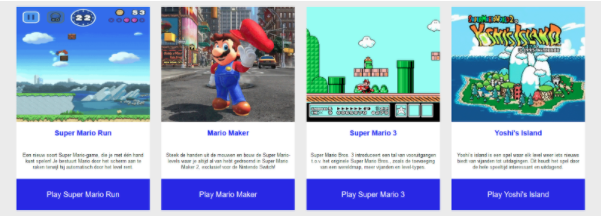

CSS
Cascading Style Sheets
Selectors & Visual rules
1. Je kunt op 3 verschillende manieren CSS in je HTML inladen. Op welke 3 manieren kun je dat doen? Leg ook
voor elke wijze uit wat het precies inhoud.
Stijlen kunnen op 3 verschillende manieren aan HTML gekoppeld worden:
Via een inline stijl, of intern met behulp van een stijlblok in de head van het document of een extern
stijlblad.
| Inline |
Dit is met behulp van een stijl attribuut in HTML-elementen. |
| Intern |
Dit is met behulp van een style element in de head van het document. |
| Extern |
Dit is met behulp van één of meer externe CSS-bestanden. Deze koppel je vervolgens aan een |
2. CSS pas je toe met een bepaalde syntax. Hoe ziet zo'n syntax eruit? Kun je ook uitleggen wat elk element
uit de syntax betekent?
CSS bestaat uit de ‘selector’, de ‘property’ en de ‘value’.
| Selector |
Dit onderdeel duidt aan waar de opgemaakte tekst of stijlblok zich bevindt. |
| Property |
Met eigenschappen kunt u een HTML-elementstijlen een bijvoorbeeld: color |
| Value |
Dit is de stijlwaarde die per eigenschap vele verschillende gedaantes kan aannemen
bijvoorbeeld: red |
3. Er zijn verschillende selectors, bijvoorbeeld; type selectors, descendant selectors, class selectors.
Maak van de bovengenoemde selectors voorbeelden. Geef in je antwoord ook aan wat de voordelen zijn van elke
selector.
voorbeelden
type selector Alle HTML-elementen van het gekozen type. Dit is het meest eenvoudige type
selector.
descendant selectors Deze matched alle elementen die afstammeling zijn van een specifiek
element.
class selectorDe .class selector selecteerd elementen met een specifiek class attribute.
Opdracht 4
Opdracht 4
Opdracht 5
Opdracht 5
6. Verder heb je ook nog de volgende selectors: child selectors, adjacent selectors & general selectors.
Geef van elke selector een voorbeeld en geef aan wat de voordelen zij van elke selector.
Voorbeelden
Child Selectors Deze selecteerd alle elementen die kinderen zijn van een specifiek element.
Adjacent SelectorsHierbij worden alle elementen geselecteerd die volgen op een specifiek
element.
General SelectorsHierbij worden alle elementen geselecteerd die siblings zijn na een specifiek
element.
7. Geef een aantal voorbeelden van selectors.
| .class |
.intro |
Selecteerd alle elemten met class="intro" |
| #id |
.name1.name2 |
Selecteerd alle elemten met id="firstname" |
| * |
* |
Selecteerd alle elemten |
| element |
p |
Selecteerd alle elemten |
| element.class |
p.intro |
electeerd alle elemten met class="intro" |
8. Leg in eigen woorden uit wat met cascade en inheritance wordt bedoeld. Maak voorbeelden om je antwoord
uit te leggen.
Cascade Houdt in dat qua regels de volgorde wordt aangehouden (van boven naar
beneden);
wanneer twee regels worden toegepast is het de laatste regel die telt. voorbeeld
Inheritance Houdt in dat child elements values van de parent element erfen. voorbeeld
2. Het box-model
1.Wat zijn de eigenschappen van block boxes en inline boxes?
Eigenschappen van Block Boxes
- line-break na een element, dus elementen kunnen niet naast elkaar staan
- The box zal de hele regel vullen om de volledige ruimte in een container te vullen.
- De width en height proporties kunnen toegepast worden
- Padding, margin en border zullen ervoor zorgen dat andere elementen weggeduwd worden van de box.
Eigenschappen van Inline Boxes
- Geen line-break na een element, dus elementen kunnen naast elkaar staan
- De width en height proporties kunnen niet toegepast worden
- Verticale padding, margins, and borders kunnen toegepast worden,
maar zullen er niet voor zorgen dat
een andere inline box van de box afgeschoven worden.
- Horizontale padding, margins, and borders kunnen toegepast worden en zorgen ervoor dat andere inline box
van de box weggeduwd worden.
Opdracht 2
opdracht 2
Opdracht 3
opdracht 3
4.Hieronder zie je een box-model

Leg uit wat de volgende termen betekenen: content, padding, margin en border.
Content The content of the box, where text and images appear
Padding Clears an area around the content. The padding is transparent
Margin A border that goes around the padding and content
Border Clears an area outside the border. The margin is transparent
5. Als je ruimte wilt maken tussen de border en content, welke css property gebruik je dan? Maak een
voorbeeld in je antwoord.
Hiervoor gebruik je de property padding; zie voorbeeld
6. Als je ruimte wilt maken tussen de border en buiten de box, welke css property gebruik je dan? Maak een
voorbeeld in je antwoord.
Hiervoor gebruik je de property margin; zie voorbeeld
7. Maak nu een blok met width: 100px, height: 100px, margin: 5px, padding 5px en border-width: 5px.
Opdracht 7
1. Hoe breed is de box?
120px
2. Hoe hoog is de box?
120px
3. Wat merk je op met width en height?
Padding en border worden erbij opgeteld.
8. Welke CSS property kun je gebruiken om ervoor te zorgen dat de waarde van width en height de totale
breedte en hoogte is van het blok van de voorgaande opdracht?
box-sizing: border-box;
9. Maak een aantal voorbeelden van boxen en maak gebruik van steeds verschillende margin, padding en border
properties.
voorbeeld 1
voorbeeld 2
voorbeeld 3
3. Display & Positioning
1. Welke position properties zijn er? Leg voor elke position property uit wat het doet.
Geef ook aan
welke default position waarde elementen hebben die je gebruikt in html.
Static
Het element wordt gepositioneerd volgens het normale verloop van het document.
De eigenschappen top,
right,
bottom, left en z-index hebben geen effect. Dit is de default value.
RelativeHierbij wordt het element ook gepositioneerd volgens de normale stroom van het document
en vervolgens verschoven ten
opzichte van zichzelf op basis van de waarden top, right, bottom en left. Dit heeft geen invloed op de
positie van andere elementen.
Absolute Het element wordt verwijderd uit de normale documentstroom en er wordt geen ruimte
gemaakt voor het element in
de paginalay-out.
Fixed Het element blijft altijd op dezelfde plaats staan, zelfs als
de pagina wordt gescrolld.
De eigenschappen top, right, bottom en left worden gebruikt om het element te
positioneren.
StickyHet element wordt gepositioneerd op basis van de scrollpositie van de gebruiker.
2. Hoe zorg je er voor dat het <h1> element altijd 50px van de top en 50px van de rechterkant van het
scherm zichtbaar is. Maak het <h1> element rood door een RGB kleurcodering toe te passen.
Door gebruik te maken van margin-top, margin-right en position: fixed; zie hier
3. Zorg er nu voor dat het <h1> element uit de voorgaande opdracht 20px links en 30px naar onder wordt
geplaatst, relatief t.o.v. diens normale positie.
Door gebruik te maken van margin-top, margin-left en position: relative; zie hier
4. Zorg er nu voor dat het <h1> element uit opdracht 2 50px links en 100px van de top wordt geplaatst
relatief t.o.v. de HTML pagina.
Door gebruik te maken van margin-left, margin-top en position: Static; zie hier
5. Positioneer het <img> element achter een tekst.
Opdracht 5
6. Maak het onderstaande na door gebruik te maken van relative position.
De outer div block is 100px
breed en 100px hoog. De inner div block is 50px breed en 50px hoog.
Opdracht 6

7. Zie de onderstaande image met tekst. Kun jij dit namaken? Gebruik zelf een foto van een zonnige
bestemming. Gebruik position, maar je mag geen z-index toepassen.
Opdracht 7

8. Maak het onderstaande na. Je mag zelf een image zoeken en gebruiken.
Opdracht 8

4. Pseudo elements
1. Kun je enkele voorbeelden geven van pseudo-elementen (minimaal 4)?
Beschrijf met je eigen woorden wat
deze pseudo-elementen inhouden.
::first-line Hiermee kan je een speciale stijl toevoegen aan de eerste regel van een tekst.
p::first-letter Hiermee kan je een speciale stijl toevoegen aan de eerste letter van een
tekst.
::before Dit kan worden gebruikt om wat inhoud in te voegen vóór de inhoud van een element.
::after Dit kan worden gebruikt om wat inhoud in te voegen na de inhoud van een element.
2. Er zijn 14 verschillende pseudo elementen. Je hebt in de voorgaande opdracht reeds 4 kunnen
benoemen.
Kun je de andere 10 ook benoemen en aangeven wat ze precies doen?
::selection Het gedeelte van een element dat door een gebruiker is geselecteerd.
::backdrop Een box die het volledige schermelement achter zich heeft, maar tegelijkertijd boven
alle andere inhoud zit.
::cue WebVTT-aanwijzingen (timed text tracks) binnen een geselecteerd element.
::cue-region WebVTT-aanwijzingen binnen een geselecteerd element.
::file-selector-button De knop van een input van type = "file".
::grammar-error Een tekstsegment dat de user-agent als grammaticaal incorrect heeft gemarkeerd.
::marker Selecteert het markeringsvak van een lijstitem, dat doorgaans een opsommingsteken of
nummer bevat.
::part Elk element binnen een schaduwboom met een overeenkomend onderdeelattribuut.
::placeholder de tijdelijke aanduiding voor tekst in een input- of textarea-element.
::selection Past stijlen toe op het deel van een document dat door de gebruiker is gemarkeerd.
3. Geen een aantal voorbeelden van pseudo-elementen.
::first-line Hiermee kan je een speciale stijl
toevoegen aan de eerste regel van een tekst
::first-letter Hiermee kan je een speciale stijl
toevoegen aan de eerste letter van een
tekst
::before Dit kan worden gebruikt om wat inhoud in te
voegen vóór de inhoud van een element
::after Dit kan worden gebruikt om wat inhoud in te
voegen na de inhoud van een element
::selection Het gedeelte van een element dat door een
gebruiker is geselecteerd
4. Hieronder vind je een voorbeeld van het gebruik van een pseudo-element. Kun jij dit namaken?
zie uitwerking

5. Hieronder vind je nog eens een voorbeeld van het gebruik van een pseudo-element ::before. Kun jij dit
namaken? Zoek een afbeelding op internet.
zie uitwerking

6. Hieronder vind je wederom een voorbeeld van het gebruik van een pseudo-element. Kun jij dit namaken?
zie uitwerking

De laatste opdracht vergt wat creativiteit. Zie het onderstaande voorbeeld en maak het na.
zie uitwerking

Flexbox
1. Zie het onderstaande voorbeeld en maak het na met flex. Gebruik geen width, height of line-height.
zie uitwerking
2. Zie het onderstaande voorbeeld, de items staan nu anders uitgelijnd. Maak het na met flex. Gebruik geen
width, height of line-height.
zie uitwerking
3. Zie het onderstaande voorbeeld, een van de items is breder dan de rest. Maak het na met flex. Gebruik
geen width, height of line-height.
zie uitwerking
4. De property ‘justify-content’ is een property die door flex gebruikt wordt. Maak verschillende
voorbeelden door gebruik te maken van de justify-content property.
Voorbeeld 1
Voorbeeld 2
Voorbeeld 3
5. De property ‘align-items’ is een property die door flex gebruikt wordt. Maak verschillende voorbeelden
door gebruik te maken van de align-items property.
Voorbeeld 1
Voorbeeld 2
Voorbeeld 3
6. Maak het onderstaande na met flexbox. Properties die je o.a dient te gebruiken zijn:
- display
- justify-content
- flex-direction
zie uitwerking

7. Maak het onderstaande na met flexbox. Properties die je o.a dient te gebruiken zijn:
- display
- justify-content
- flex-direction
- align-items
zie uitwerking
8. Zie het onderstaande voorbeeld en maak het na met flexbox.
zie uitwerking
9. Zie het onderstaande voorbeeld en maak het na met flexbox.
Zorg voor een leuk effect als je met de
muis over de ‘play’ knop heen gaat.
zie uitwerking

10. Verzin zelf een opdracht met flexbox. Irriteer je medecursist ermee door je medecursist te vragen om het
na te maken.
zie uitwerking
Transitions
1. Zoek uit wat transitions zijn en beschrijf met eigen woorden wat het betekent.
Dit is een manier om de animatiesnelheid te regelen bij het wijzigen van values. In plaats van
property wijzigingen direct in werking te laten treden, kan je ervoor zorgen dat de wijzigingen aan een
property gedurende een bepaalde periode plaatsvinden.
2. Maak een simpele transition wat de kleur van een tekst aanpast.
zie uitwerking
3. Transitions kent verschillende transition-timing. Zie hieronder een voorbeeld. Maak het na.
zie uitwerking
4. Je kunt op verschillende properties transitions aangeven. Zie hieronder een voorbeeld. Zoek uit op welke
properties de transitions zitten en maak het ongeveer hetzelfde na.
zie uitwerking
5. Hieronder zie je wederom een voorbeeld van een transition. Je kunt op verschillende properties
transitions aangeven. Zoek uit op welke properties de transitions zitten en maak het na. Je eigen
creativiteit gebruiken is uiteraard toegestaan.
zie uitwerking